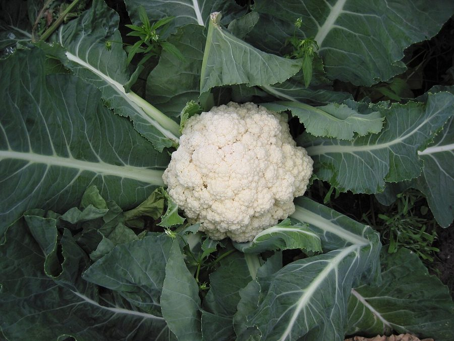

फूल गोभीCauliflower
Brassica oleracea var. botrytis · Brassicaceae · FLR-0173

- Scientific nameवैज्ञानिक नाम
- Brassica oleracea var. botrytis L.
- Familyकुल
- Brassicaceae
- Hindiहिंदी
- फूल गोभी
- Local namesस्थानीय नाम
- gobhi, phool gobhi, cauliflower, phulkopi, safed gobhi
- Status hereयहाँ की स्थिति
- cultivated
- Movementआवागमन
- Resident, here all year
- IUCNIUCN
- not evaluated
- Reviewसमीक्षा
- audited and independently read
When to look कब देखें
Expected mainly in October, November, December, January, February.मुख्यतः अक्टूबर, नवंबर, दिसंबर, जनवरी, फ़रवरी में अपेक्षित।
Uses and possibilities उपयोग और संभावनाएँ
Drawn from the documented uses in the profile below, where each is labelled traditional, current or a research lead. All uses →
Tell it apart from इनसे अलग पहचानें
फूल गोभी / Cauliflower
Brassica oleracea var. botrytis L. — Brassicaceae
फूल गोभी (गोभी, फुलकोपी, सफेद गोभी) — सर्दियों की सबसे महत्वपूर्ण सब्जी, जिसे हर खेत में अक्टूबर-नवंबर में लगाया जाता है। पत्तियों का एक गुच्छा, और बीच में सफेद फूल जैसा हिस्सा जिसे कर्ड (दूध) कहते हैं। यह हिस्सा छोटे-छोटे फूलों का गुच्छा है जो अभी खिलने से पहले के हैं। पूरी तरह सफेद, गहरा, गोल-मटोल। सर्दी के 3-4 महीने में यह सब्जी बाज़ार में बहुतायत में मिलती है और हर घर खाता है।
Quick Identification त्वरित पहचान
| Feature | Description |
|---|---|
| Plant form | Biennial herb, 30–50 cm tall, rosette of leaves around a central curd |
| Leaves | Large, 30–50 cm, obovate, blue-green, with prominent veins, waxy coating |
| Curd (inflorescence) | White, cream, or greenish, compact, 15–25 cm diameter, made of unopened flower buds |
| Head | Dense, rounded, compact, smooth or slightly bumpy texture |
Field tip: A rosette-forming plant with large, blue-green, waxy leaves. In the center is a compact, white, cauliflower-like head (technically an immature flower cluster or inflorescence). Look for it in cool-season vegetable fields from November to January.
Morphology आकारिकी
Biometrics (typical measurements for cultivated cauliflower in northern India):
| Measurement | Range |
|---|---|
| Plant height | 30–50 cm |
| Leaf length | 30–50 cm |
| Leaf width | 10–20 cm |
| Curd (head) diameter | 15–25 cm |
| Curd weight | 0.5–2 kg (depending on variety) |
Root system: Taproot with fibrous laterals, extending 30–40 cm deep.
Leaves: Alternate, rosette-forming, large, obovate, waxy coating (glaucous), blue-green color, with prominent veins. The leaf margin is smooth or slightly toothed.
Stem: Short, sturdy, at the center of the rosette, bearing the developing inflorescence.
Curd (Inflorescence): The edible part is technically a thyrse of unopened flower buds, tightly packed and consolidated into a single compact mass. The color is typically white or cream (less commonly green or purple in specialty varieties). The texture is compact and smooth or slightly lumpy. The structure consists of branches (often called "florets" in culinary terms) radiating from a central axis.
Flower and seed: If left unharvested, the curd continues to grow and eventually flowers, producing typical Brassica yellow flowers and developing seed pods.
हिंदी: बड़ी, नीली-हरी पत्तियाँ, मोमी लेप से ढकी। बीच में सफेद, गोल, कड़ा कर्ड। न खुले फूलों का गुच्छा।
Behaviour & Ecology व्यवहार और पारिस्थितिकी
A cool-season cruciferous vegetable, a cultivated variety of Brassica oleracea, likely of Mediterranean origin. Brassica oleracea var. botrytis is a biennial that is grown as an annual vegetable crop in eastern UP. The plant requires cool temperatures (15–20°C optimal) and moderate moisture for curd formation. Cold stress can trigger curd development even in young plants.
The plant thrives in well-drained, fertile soils rich in nitrogen and boron. Boron deficiency causes "browning" of the curd. The plant is sensitive to hot weather; if temperatures exceed 25°C during curd formation, the curds become loose and "ricey" (discolored and poor quality).
हिंदी: ठंड में पनपता है। नाइट्रोजन-प्रिय है। गर्मी दिखे तो कर्ड खराब हो जाता है। सर्दी की बहुत पसंद।
Life Cycle / Phenology जीवन चक्र
| Month / Season | Event |
|---|---|
| July–August | Nursery preparation; seed sowing in shade |
| August–September | Seedling growth in nursery; hardening off |
| September–October | Transplanting to field; establishment |
| October–November | Vegetative growth; leaf expansion |
| November–December | Curd initiation; curd growth |
| December–January | Curd maturation; harvest |
| January–February | Extended harvest of late varieties |
From transplanting to first harvestable curd: 50–70 days, depending on temperature and variety.
हिंदी: अगस्त में पौधे, सितंबर-अक्टूबर में खेत में, नवंबर-दिसंबर में कर्ड, दिसंबर-जनवरी में तोड़ते हैं।
Cultivation Calendar कृषि कैलेंडर
| Stage | Month(s) |
|---|---|
| Nursery seed sowing | July–August |
| Seedling growth and hardening | August–September |
| Field preparation | September |
| Transplanting to field | September–October |
| Establishment and vegetative growth | October–November |
| Curd initiation and growth | November–December |
| Harvest (tender white curds) | December–January |
| Extended harvest (late varieties) | January–February |
Associated Species / Interactions संबंधित प्रजातियाँ
- Crop rotation: Often follows Paddy or Maize; may be followed by Onion or spring vegetables.
- Intercropping: Sometimes grown with Onion, Potato, or leafy vegetables.
- Related Brassicas: Grown alongside cabbage and broccoli in some systems.
Pests and Diseases कीट और रोग
- Cabbage butterfly larvae: Pieris brassicae; larvae feed on leaves, sometimes reaching curd.
- Looper caterpillars: Autographa spp.; feed on leaves and developing curds; control with neem spray.
- Imported cabbage worm: Plutella xylostella; small larvae tunnel in leaves and buds.
- Powdery mildew: White fungal coating; spray with sulfur if conditions are humid.
- Clubroot: Plasmodiophora brassicae; fungal disease of roots causing stunting; prevent by crop rotation and soil drainage.
- Black rot: Xanthomonas campestris pv. campestris; vascular disease; no cure; remove infected plants.
Agricultural / Human Relevance कृषि प्रासंगिकता
Vegetable use: The immature white or cream-colored curd (inflorescence) is harvested when fully developed but before the flower buds open (usually when the head diameter is 15–25 cm). The curd is boiled, steamed, fried, or curried. In India, cauliflower is most commonly prepared as gobhi fry (dry curry) or mixed with potato. The curd is entirely edible.
Nutritional value: Cauliflower is rich in vitamin C, folate, and dietary fiber. The vegetable is low in calories (about 25 kcal per 100 g) and is commonly recommended in healthy diets. The cruciferous compounds in Brassicas are believed to have anti-cancer properties.
Culinary traditions: In Indian cuisine, cauliflower is primarily a winter vegetable. Aloo-gobhi (potato and cauliflower curry) is a traditional dish. The vegetable is also used in mixed vegetable preparations, rice dishes, and breads.
Varieties and seasons: Early varieties mature in 50–60 days (suitable for October–November harvest). Main-season varieties mature in 60–80 days (November–December harvest). Late varieties mature in 80–100 days (January–February harvest). Common improved varieties include Pusa Snowball, Pusa Synthetic, and others.
Ease of cultivation: Cauliflower requires more care than cabbage due to its sensitivity to environmental stress, boron deficiency, and the requirement for consistent moisture. However, it is routinely cultivated by farmers in eastern UP and is a valuable winter crop.
Seed production: Cauliflower seed is produced from plants left to overwinter and then flower in spring. This is a specialized practice; most farmers purchase seed.
हिंदी: सर्दी की सब्जी। नाइट्रोजन बहुत चाहिए। बोरॉन न हो तो कर्ड खराब हो जाता है। गर्मी से बचना चाहिए।
Expected Locally स्थानीय रूप से अपेक्षित
Not a field record. Written from published accounts for eastern Uttar Pradesh. No confirmed local sighting yet — if you have seen it, that is what the atlas needs.
अभी तक स्थानीय पुष्टि नहीं। यह विवरण प्रकाशित स्रोतों से है, किसी अवलोकन से नहीं।
Expected as a common cultivated winter vegetable in fields and homestead gardens throughout Basti district, visible from October to February. Fresh curds are sold in all local vegetable markets during the winter season and are one of the most popular cool-season vegetables.
Distribution वितरण
Global range: Brassica oleracea is native to the Mediterranean and Atlantic coasts of Europe. Cauliflower is a relatively recent crop development (Medieval Europe); now cultivated worldwide in cool climates.
In India: Widely cultivated as a winter vegetable in all cooler and wetter regions; major production in northern states.
In Uttar Pradesh: Widely cultivated; one of the principal winter vegetables.
In Basti district / eastern UP: Common as a cultivated winter vegetable in all agricultural blocks.
Research Questions शोध प्रश्न
Anyone can investigate these | कोई भी इन प्रश्नों की जाँच कर सकता है
- Which early, main-season, and late cauliflower varieties grow best in your area, and what are typical maturity times? / आपके इलाके में कौन सी किस्मों का समय कम होता है? — Grow 2–3 varieties side by side; record maturity dates.
- Does adding boron fertilizer improve curd quality and yield? — Compare plots with and without boron; measure quality and yield.
- How many days of frost can cauliflower curds tolerate without damage? — Note temperatures; observe curd condition; document frost tolerance.
- Which insects damage cauliflower leaves and curds most severely in your area? — Examine plants weekly; identify and count pests.
- What is the minimum and maximum temperature for good curd formation? — Monitor temperature and curd development; note optimal range.
Similar Species मिलती-जुलती प्रजातियाँ
| Species | How to tell apart | हिंदी |
|---|---|---|
| cabbage (Brassica oleracea var. capitata) | Head is tightly folded leaves (solid when cut), not unopened flower buds; denser, harder | गोभी (बंद) — पत्तियों की गोल गांठ |
| broccoli (Brassica oleracea var. italica) | Green curd (unopened flower cluster); central stalk with lateral head clusters; larger florets | ब्रोकोली — हरा कर्ड, लंबा पौधा |
| Romanesco (Brassica oleracea var. italica × botrytis) | Yellow-green, fractal spiral structure; intermediate between broccoli and cauliflower | रोमानेस्को — हरा, सर्पिल आकार |
Field rule: A cool-season rosette herb with large, waxy, blue-green leaves surrounding a compact, white (or cream), dome-shaped, dense curd of unopened flower buds is cauliflower.
Taxonomy & Classification वर्गीकरण
Original description. Brassica oleracea was described by Linnaeus in 1753. The variety botrytis (from the Greek botrys, meaning "grape" or "cluster") describes the flower-cluster nature of the curd. Cauliflower is a relatively recent domestication from wild cabbage, likely in Italy or southern Europe in medieval times.
Subspecies. Brassica oleracea has multiple cultivated varieties: var. capitata (cabbage), var. botrytis (cauliflower), var. italica (broccoli), var. oleracea (kale), and others.
Family and order placement. Brassicaceae, order Brassicales. The family includes all crucifers — cabbage, broccoli, radish, mustard, and others.
Phylogenetic notes. Brassica oleracea is closely related to B. rapa (turnip and bok choy) and B. napus (rapeseed and cabbage). The genus Brassica contains about 40 species, mostly in temperate regions.
IUCN status rationale. Not evaluated. Widely cultivated; not assessed for conservation status.
Photo Gallery फोटो गैलरी
Photos needed आवश्यक फोटो
- [ ] Whole plant showing leaves and developing white curd
- [ ] Mature white curd ready for harvest
- [ ] Cross-section showing internal structure of curd
No photos yet — add field photos to media/species/cauliflower/ and run node scripts/sync_photos.js.
References संदर्भ
- Linnaeus, C. (1753). Species Plantarum. Laurentii Salvii, Stockholm, Vol. 2, p. 667.
- Hooker, J.D. (1872). Flora of British India, Vol. 1. L. Reeve & Co., London.
- Indian Council of Agricultural Research (2021). Handbook of Agriculture. ICAR, New Delhi.
- Chadha, K.L. (2010). Handbook of Horticulture. Indian Council of Agricultural Research, New Delhi.
- Sharma, M. & Singh, P. (2017). Vegetable Crop Management. Indian Journal of Horticulture 64(4): 498–510.
- GBIF Occurrence Data — Brassica oleracea, India (2015–2026).
Source file: species/flora/crops/cauliflower.md